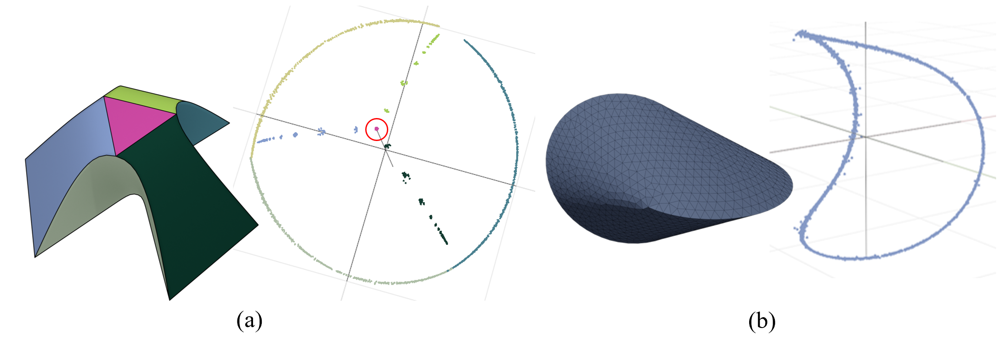
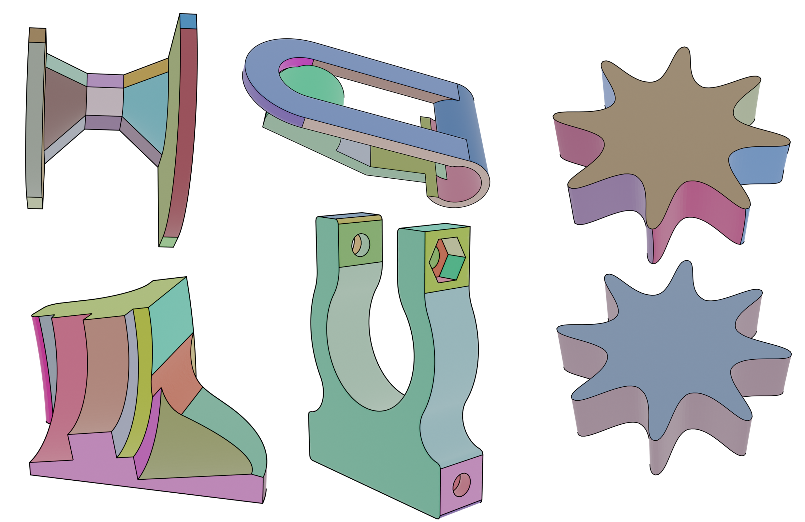

|
Zheng Zeng （曾铮）
|
Biography
I am currently a Postdoctoral Researcher at the Academy of Mathematics and Systems Science (AMSS), Chinese Academy of Sciences. I received my Ph.D. degree from AMSS under the supervision of Dr. Xiaohong Jia.
My research interest includes geometry processing, computer aided geometric design and computational geometry.
Publications
|

|
Developable mesh segmentation by detecting curve-like features on Gauss images
Zheng Zeng, Xiaohong Jia, Liyong Shen, Pengbo Bo Computers & Graphics, Vol. 109, 42-54, 2022 |
|

|
Developable Surface Segmentation For CAD Models
Zheng Zeng, Xiaohong Jia, Liyong Shen, Pengbo Bo In ACM SIGGRAPH 2021 Posters |